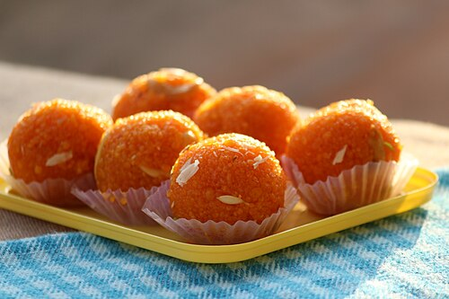
1. ladduFile:Laddu Sweet.JPG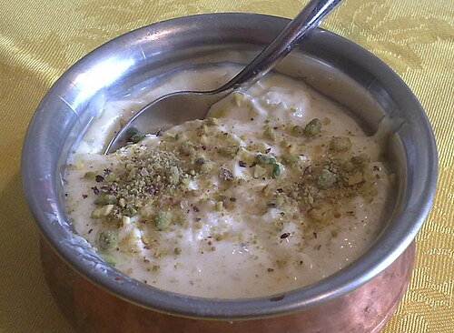
2. srikhandaFile:Shrikhand london kastoori.jpg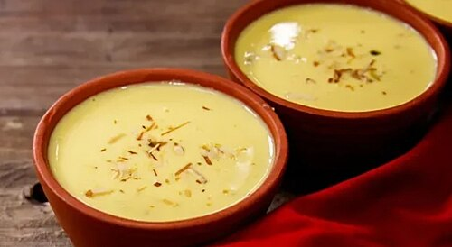
3. basundiFile:Basundi in Maharashtrian style.jpg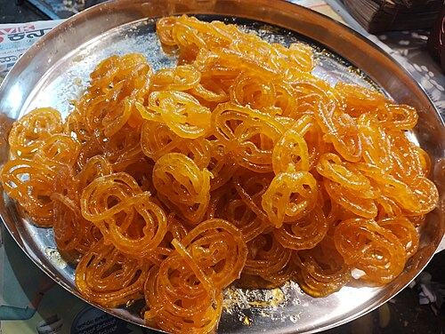
4. jilebiFile:Basavanagudi Kadalekai Parishe (2025) Bangalore (86).jpg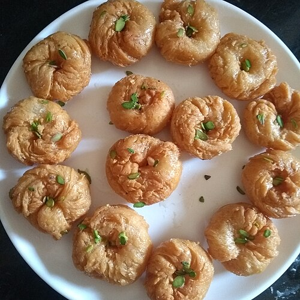
5. balushaiFile:Home made makkhan bada.jpg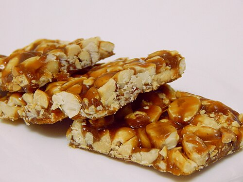
6. palli-chekkiFile:Peanut Chikki.JPG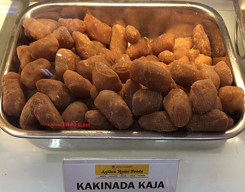
7. kakinada-kajaFile:Andhra Telangana Sweets - Kakinada Kaja.jpg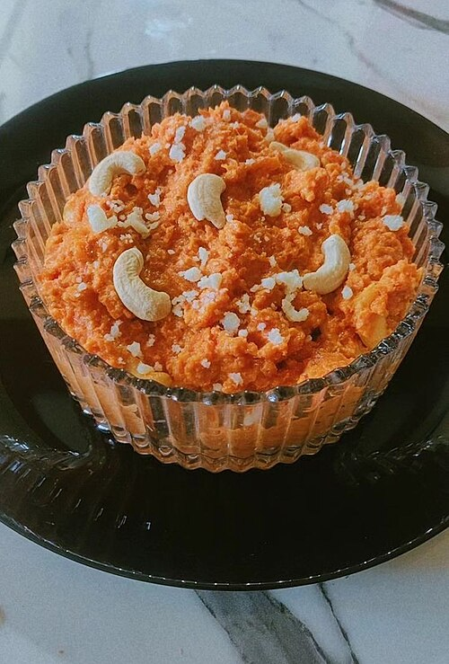
8. carrot-halwaFile:Cuisine (268) 44.jpg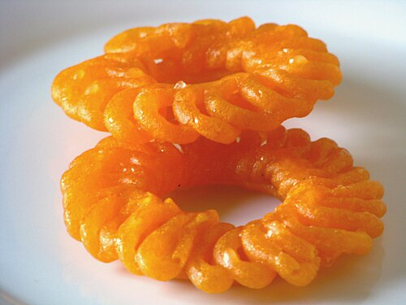
9. jangriFile:JalebiIndia.jpg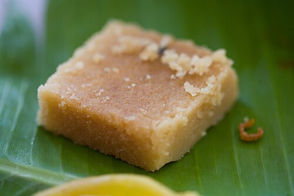
10. mysore-pakFile:Mysore pak.jpg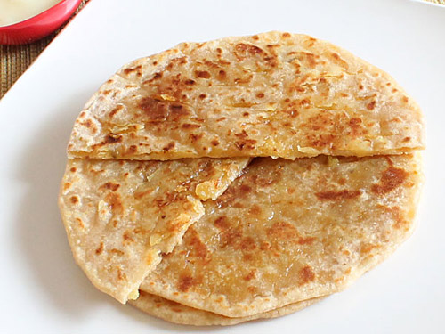
11. bobbatluFile:Puran Poli.jpg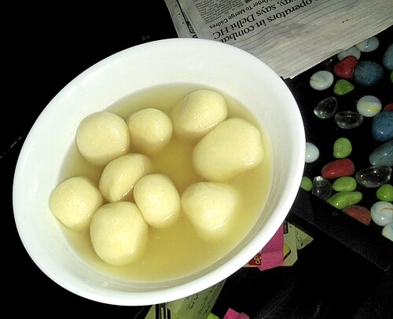
12. rasgullaFile:Rasgulla.jpg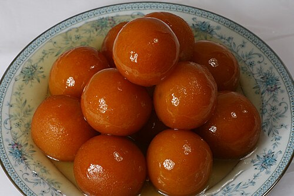
13. kala-jamunFile:Gulab-jamun-wallpaper-1.jpg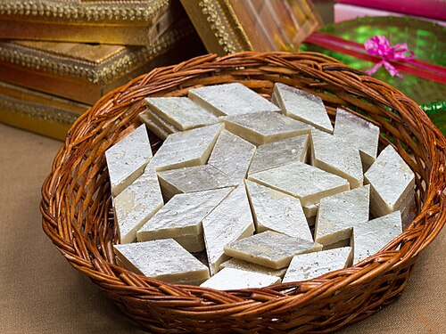
14. kaju-katliFile:Kaju katli sweet.jpg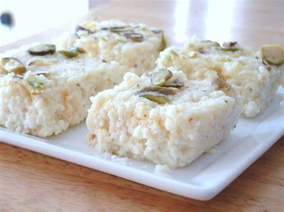
15. kalakandFile:Koderma Kalakand.jpg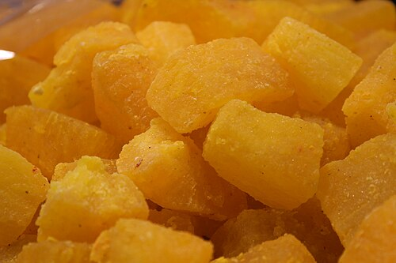
16. agra-pethaFile:Petha kesari.JPG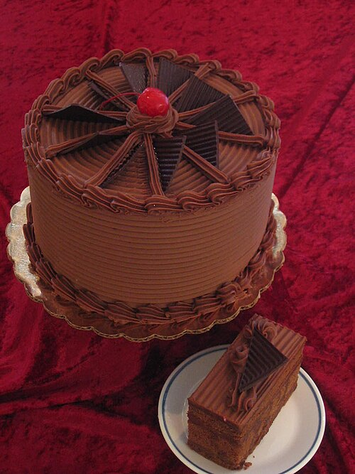
17. chocolate-cakeFile:Chocolate fudge cake.jpg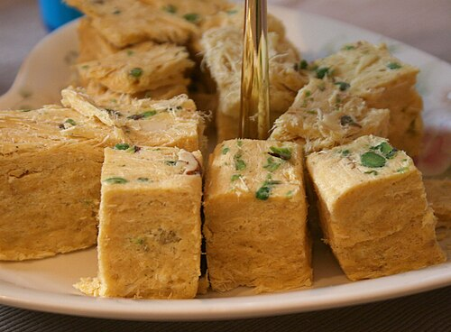
18. son-papdiFile:Son papadi.jpg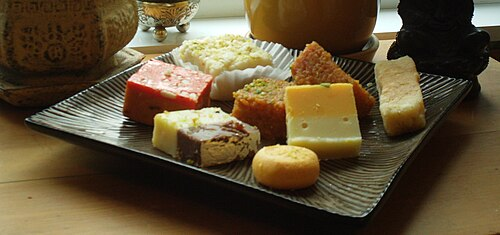
19. coconut-burfiFile:Almond Khoa based burfi Mumbai India (cropped).jpg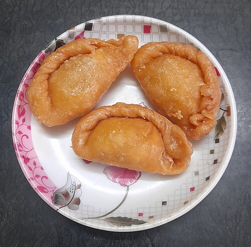
20. chandrakalaFile:Chandirakala.jpg